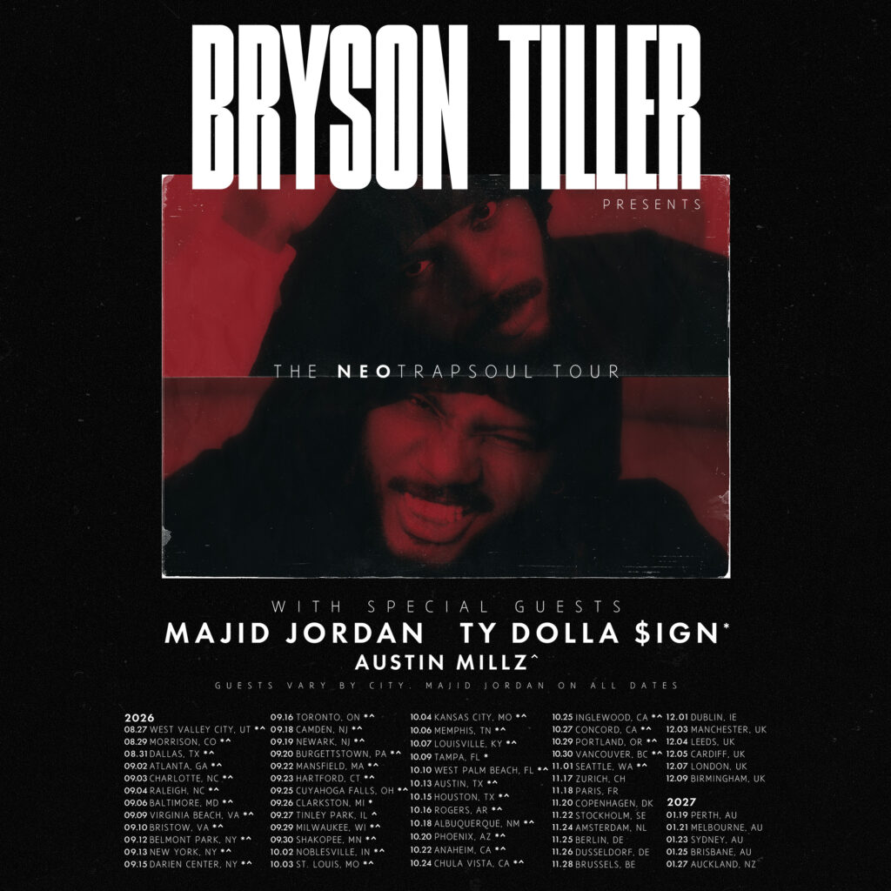

Bryson Tiller (born January 2, 1993) is an American R&B singer, songwriter, and rapper who emerged as a defining force in contemporary music by pioneering the "trap soul" sound—a moody, atmospheric fusion of hip-hop trap production and smooth alternative R&B.
Early Life and BeginningsRaised in Louisville, Kentucky, Tiller began recording music in his teens, turning to a makeshift living-room setup and pulling beats from YouTube and SoundClick. Balancing his passion for music with everyday life and working jobs to provide for his daughter, he continued writing and recording independently.
Breakthrough and TRAPSOULIn October 2014, Tiller uploaded a self-reflective track titled "Don't" to SoundCloud. The song gained organic viral momentum online, catching the attention of major industry figures like Timbaland and Drake. Opting to sign with RCA Records in 2015, he released his breakthrough debut studio album, TRAPSOUL, in October 2015.
The album peaked at number eight on the US Billboard 200 and established his signature subgenre. Hit singles like "Don't" and "Exchange"—the latter earning him a Grammy nomination for Best R&B Song—cemented his status as a prominent new voice in modern R&B. Around this time, he also earned the nickname Pen Griffey, referencing his songwriting proficiency and his Louisville roots (home of the Louisville Slugger baseball bat).
Continued Success and EvolutionFollowing his debut, Tiller expanded his catalog with consecutive major releases, including his sophomore album True to Self (which hit No. 1 on the Billboard 200), Anniversary, and his 2024 self-titled fourth studio album, Bryson Tiller. Known for his introspective lyricism, smooth vocal delivery, and high-profile collaborations with artists like Rihanna, DJ Khaled, and Travis Scott, Tiller continues to shape the direction of modern R&B.
& SoundThe Origin of "Trap Soul": Bryson Tiller didn't just name his debut album TRAPSOUL; he essentially birthed a subgenre. His music combines the heavy, hard-hitting 808 bass patterns and hi-hats of southern hip-hop (trap) with the smooth, late-night vulnerability and atmospheric melodies of contemporary R&B.
Self-Taught Beginnings: Tiller didn't go to a traditional music conservatory. He taught himself how to record, mix, and engineer his own vocals using basic equipment in his living room, pulling instrumentals straight from YouTube and SoundClick.
The "Pen Griffey" Moniker: Known frequently by his alter-ego moniker "Pen Griffey" (a nod to legendary baseball player Ken Griffey Jr. and his Louisville hometown roots), Tiller is widely recognized for his sharp, clever pen game and conversational storytelling.
Genre-Blending Evolution: While his early work defined moody late-night R&B, Tiller has continuously branched out. Later projects like his self-titled album (Bryson Tiller) and his double-album Solace & The Vices weave in elements of dancehall, UK drill, pop, and heavy rap verses.
Massive Collaborations: Beyond his solo dominance, Tiller's distinct cadence has made him a sought-after feature artist. Most notably, he co-wrote and featured on DJ Khaled's blockbuster 2017 hit "Wild Thoughts" alongside Rihanna, which reached No. 2 on the Billboard Hot 100.
Set It Off Tour (2017): Launched in support of his second studio album, True to Self, this major North American and international tour saw Tiller graduating from mid-sized theaters to selling out major arenas, with support acts like H.E.R. and Metro Boomin.
Back and I'm Better Tour (2023): Marking a triumphant return to extensive touring after a quieter period, this heavily anticipated North American run celebrated his catalog and set the stage for his next creative era.
The Bryson Tiller Tour (2024): A massive global trek spanning North America, the UK, and Europe, supporting his self-titled fourth album (Bryson Tiller). It featured prominent packed nights at venues like The Theater at MSG in New York and the OVO Arena Wembley in London.
The Neo Trapsoul Tour (2025–2026 / 2027): An expansive international stadium and arena run covering North America, Europe, the UK, and expanding into Australia and New Zealand alongside supporting acts like Majid Jordan.

Global Festival Fixture: Tiller has been a staple at major international music festivals, delivering standout sets at Rolling Loud, Wireless Festival (UK), ONE MusicFest, and the New Orleans Jazz & Heritage Festival.
High-Profile Special Guest Runs: Alongside his solo treks, Tiller has shared the stage on high-profile collaborative stadium runs, including supporting slots and major co-billing lineups with heavyweights like Chris Brown (such as stadium legs and festival-style amphitheater events).
The Vibe Shift: Early in his career, Tiller’s live performances leaned heavily into the moody, dark, and intimate aesthetic of TRAPSOUL—relying on atmospheric lighting, minimalist staging, and letting his vocal performance take center stage.
Full-Production Spectacles: Over the years, his shows have evolved to feature heavy trap production, complex multi-tier stage designs, dynamic visual graphics, and high-energy crowd interactions.
Fan-Favorite Setlist Staples: No matter the tour, certain tracks remain permanent fixtures of his live rotation:
(his massive feature originally with DJ Khaled and Rihanna) "Whatever She Wants" (from his 2024 self-titled era)
Bryson Tiller's official and fan-favorite merchandise lines heavily embrace his signature "Trapsoul" aesthetic, R&B vibes, and modern streetwear culture.
Apparel and Tees: The clothing line features graphic tees, hoodies, and crewnecks showcasing iconic album artwork, tour dates (such as the Set It Off Tour and Neo Trapsoul Tour), and vintage-style silhouette portraits. They are typically crafted from soft, pre-shrunk ring-spun or heavy cotton for an everyday comfortable fit.
Headwear and Accessories: Classic embroidered dad hats—available in both clean white and washed black—are staples of his merch drops. They feature minimal branding or subtle nods to major projects like True to Self.
Professional correspondence and customer support for Bryson Tiller's business operations are handled through specific designated channels rather than personal direct lines.
Booking and Business Inquiries: Professional booking requests, corporate appearances, and talent agency representation are managed through his booking agency page.
Store Customer Service: For inquiries regarding official online store orders, shipping updates, or merchandise support, a dedicated customer service email address is provided by his e-commerce team.